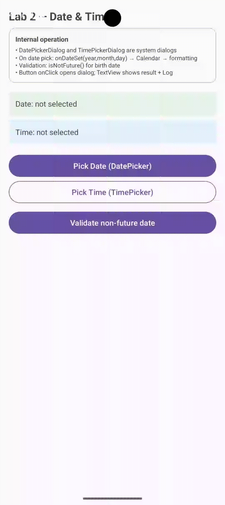

DatePickerDialog, TimePickerDialog & Validación No Futura
Aprende a integrar los selectores modales estándar de Android, almacenar el estado en un objeto Calendar,
formatear la salida a cadenas legibles y validar reglas temporales como isNotFuture (ideal para fechas de
nacimiento o eventos pasados).
1. Capturas en Emulador
Haz clic sobre cualquier captura para abrirla en zoom interactivo
Estado Inicial
lab-datetime-preview.png

DatePickerDialog
lab-datetime-dialog.png

DatePickerDialog
lab-datetime-preview_live.gif

2. Componentes y Diálogos Clave
android.app.*| Componente / ID | Tipo / Diálogo | Propósito | Validación / Regla |
|---|---|---|---|
| btnPickDate · tvDate | DatePickerDialog | Selector modal de calendario (año, mes 0-index, día) | Requerido antes de validar |
| btnPickTime · tvTime | TimePickerDialog | Selector modal de reloj en formato 24 horas (HH:mm) | Opcional / Informativo |
| btnValidateDate | ValidationUtils | Verifica que la fecha seleccionada no sea futura | isNotFuture() (millis ≤ now) |
3. Código Fuente del Layout XML y Controladores
<?xml version="1.0" encoding="utf-8"?>
<ScrollView xmlns:android="http://schemas.android.com/apk/res/android"
xmlns:app="http://schemas.android.com/apk/res-auto"
android:layout_width="match_parent"
android:layout_height="match_parent">
<LinearLayout
android:layout_width="match_parent"
android:layout_height="wrap_content"
android:orientation="vertical"
android:padding="16dp">
<!-- Título Principal del Laboratorio -->
<TextView
android:layout_width="wrap_content"
android:layout_height="wrap_content"
android:text="@string/acdati_title"
android:textSize="20sp"
android:textStyle="bold" />
<!-- Tarjeta de Operación / Contexto -->
<com.google.android.material.card.MaterialCardView
android:layout_width="match_parent"
android:layout_height="wrap_content"
android:layout_marginTop="8dp"
app:strokeColor="@color/cardStroke"
app:strokeWidth="1dp"
app:cardElevation="0dp">
<LinearLayout
android:layout_width="match_parent"
android:layout_height="wrap_content"
android:orientation="vertical"
android:padding="12dp">
<TextView
android:layout_width="wrap_content"
android:layout_height="wrap_content"
android:text="@string/common_label_operation"
android:textStyle="bold"
android:textSize="12sp" />
<TextView
android:layout_width="wrap_content"
android:layout_height="wrap_content"
android:layout_marginTop="4dp"
android:text="@string/acdati_info_desc"
android:textSize="11sp" />
</LinearLayout>
</com.google.android.material.card.MaterialCardView>
<!-- Preview de Fecha Seleccionada -->
<TextView
android:id="@+id/tvDate"
android:layout_width="match_parent"
android:layout_height="wrap_content"
android:layout_marginTop="16dp"
android:background="#FFE8F5E9"
android:padding="12dp"
android:text="@string/acdati_date_empty" />
<!-- Preview de Hora Seleccionada -->
<TextView
android:id="@+id/tvTime"
android:layout_width="match_parent"
android:layout_height="wrap_content"
android:layout_marginTop="8dp"
android:background="#FFE3F2FD"
android:padding="12dp"
android:text="@string/acdati_time_empty" />
<!-- Botón para Elegir Fecha con DatePickerDialog -->
<com.google.android.material.button.MaterialButton
android:id="@+id/btnPickDate"
android:layout_width="match_parent"
android:layout_height="wrap_content"
android:layout_marginTop="16dp"
android:text="@string/acdati_btn_date" />
<!-- Botón para Elegir Hora con TimePickerDialog -->
<com.google.android.material.button.MaterialButton
android:id="@+id/btnPickTime"
android:layout_width="match_parent"
android:layout_height="wrap_content"
android:layout_marginTop="8dp"
android:text="@string/acdati_btn_time"
style="@style/Widget.Material3.Button.OutlinedButton" />
<!-- Botón para Validar Fecha No Futura -->
<com.google.android.material.button.MaterialButton
android:id="@+id/btnValidateDate"
android:layout_width="match_parent"
android:layout_height="wrap_content"
android:layout_marginTop="8dp"
android:text="@string/acdati_btn_validate" />
</LinearLayout>
</ScrollView>4. Guía de Desarrollo Paso a Paso
- Crear el layout
res/layout/activity_date_time.xmlcontvDate,tvTimey botones de acción. - En la actividad, instanciar un objeto
Calendar.getInstance()para guardar el estado de la fecha. - Implementar
DatePickerDialogrecordando que los meses en la API clásica de Calendar son 0-indexados (month + 1). - Implementar
TimePickerDialogcon el flagis24HourView = true. - Al pulsar validar, verificar que
selectedDate.getTimeInMillis() <= System.currentTimeMillis()usandoValidationUtils.isNotFuture.
5. Cómo llamar, manipular, sobrescribir y dar error a cada picker
Fecha y hora no son EditText: son TextView que muestran estado + Calendar que guarda dato + Dialog que lo edita. Abajo, por cada componente, cómo llamar, manipular, sobrescribir y dar error.
API común (vale para Date y Time)
// Llamar
TextView tvDate = findViewById(R.id.tvDate);
Calendar selectedDate = Calendar.getInstance();
boolean dateChosen = false;
// Kotlin
val tvDate = binding.tvDate
// Manipular - leer
long millis = selectedDate.getTimeInMillis();
String s = tvDate.getText().toString();
boolean chosen = dateChosen;
// Sobrescribir
selectedDate.set(2024, 5, 15); // 15 jun 2024 (mes 0-index)
tvDate.setText(getString(R.string.acdati_date_prefix, "15/06/2024"));
dateChosen = true;
// Dar error y limpiar
tvDate.setError(getString(R.string.common_err_date_future));
tvDate.setError(null);
Toast.makeText(this, getString(R.string.common_err_date_future), Toast.LENGTH_SHORT).show();Ciclo del Dialog
new DatePickerDialog(this,
(view, year, month, day) -> {
selectedDate.set(year, month, day);
dateChosen = true;
String f = String.format(Locale.getDefault(), "%02d/%02d/%04d", day, month+1, year);
tvDate.setText(getString(R.string.acdati_date_prefix, f));
},
c.get(Calendar.YEAR), c.get(Calendar.MONTH), c.get(Calendar.DAY_OF_MONTH)
).show();El Dialog no es una View del layout: es una ventana modal del sistema que llama a onDateSet / onTimeSet.
Por tipo de picker
| Componente | Llamar | Manipular | Sobrescribir | Dar error |
|---|---|---|---|---|
| tvDate TextView | findViewById(R.id.tvDate) | getText()getString(acdati_date_prefix) | setText(acdati_date_prefix, "01/01/2000")selectedDate.set(...) | setError(common_err_date_future)+ Toast |
| tvTime TextView | findViewById(R.id.tvTime) | getText() | setText(acdati_time_prefix, "14:30") | Informativo, no bloquea (solo Log.w) |
| selectedDate Calendar | Calendar.getInstance() | getTimeInMillis()get(Calendar.YEAR) | set(year, month, day)set(Calendar.HOUR_OF_DAY, 14) | ValidationUtils.isNotFuture(millis) |
| DatePickerDialog | new DatePickerDialog(...) | onDateSet(year, month, day)month 0-index | Reconstruir con new DatePickerDialog(..., year, month, day).show() | if (!dateChosen) Toast acdati_msg_pick_date_first |
| TimePickerDialog | new TimePickerDialog(..., is24HourView=true) | onTimeSet(hour, minute) | new TimePickerDialog(..., hour, minute, true).show() | No bloquea validación |
Snippets copiables — manipular / sobrescribir / error
// Java — por cada picker
// Llamar y leer
String dateStr = tvDate.getText().toString();
long millis = selectedDate.getTimeInMillis();
boolean chosen = dateChosen;
// Manipular: formatear y mostrar
String f = String.format(Locale.getDefault(), "%02d/%02d/%04d", day, month+1, year);
tvDate.setText(getString(R.string.acdati_date_prefix, f));
LoggerUtils.i(TAG, "Fecha elegida: " + f);
// Sobrescribir: forzar fecha programáticamente
selectedDate.set(2000, Calendar.JANUARY, 1);
tvDate.setText(getString(R.string.acdati_date_prefix, "01/01/2000"));
dateChosen = true;
// Dar error
if (!dateChosen) {
Toast.makeText(this, getString(R.string.acdati_msg_pick_date_first), Toast.LENGTH_SHORT).show();
return;
}
if (!ValidationUtils.isNotFuture(selectedDate.getTimeInMillis())) {
tvDate.setError(getString(R.string.common_err_date_future));
Toast.makeText(this, getString(R.string.common_err_date_future), Toast.LENGTH_SHORT).show();
} else {
tvDate.setError(null);
}// Kotlin + ViewBinding — mismo, más corto
with(binding) {
// Llamar / leer
val dateStr = tvDate.text.toString()
val millis = selectedDate.timeInMillis
// Manipular
val f = String.format(Locale.getDefault(), "%02d/%02d/%04d", day, month+1, year)
tvDate.text = getString(R.string.acdati_date_prefix, f)
// Sobrescribir
selectedDate.set(2000, Calendar.JANUARY, 1)
tvDate.text = getString(R.string.acdati_date_prefix, "01/01/2000")
dateChosen = true
// Error con extensión
fun TextView.setValidationError(msg: String?) {
error = msg
if (msg != null) Toast.makeText(this@DateTimeActivity, msg, Toast.LENGTH_SHORT).show()
}
if (!ValidationUtils.isNotFuture(selectedDate.timeInMillis)) {
tvDate.setValidationError(getString(R.string.common_err_date_future))
} else {
tvDate.error = null
}
}Sobrescribir sin Dialog
Puedes selectedDate.set(...) + tvDate.setText(...) sin abrir Dialog — útil para precargar cumpleaños.
Dar error
TextView sí tiene setError() (aunque sin helper como TextInputLayout). Se limpia con null.
Mes 0-index
Error clásico: month + 1 al formatear. Calendar.JANUARY = 0, diciembre = 11.